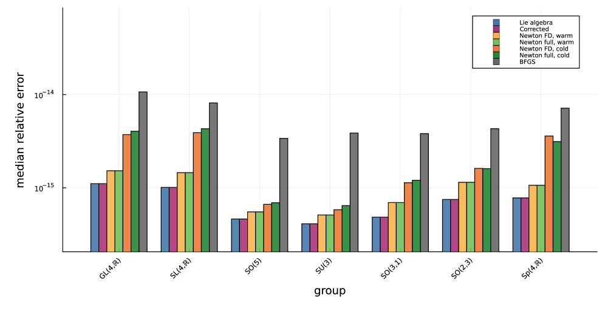
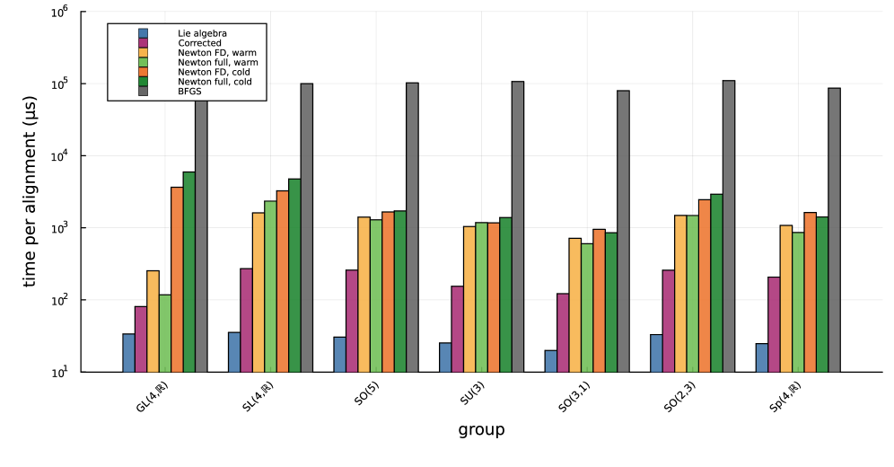

Formally verifies in Lean 4 with Mathlib the Lie algebra projection formulae, their optimality, and the real-embedding exponential identity.
Abstract
The difference in gauge between two observers of the same physical system can be thought of as a group element acting on their common vector representations. Recovering that group element from a finite, noisy list of paired observations may be of use in both theory and experiment. The Kabsch and Horn algorithms efficiently align point clouds in $\mathbb R^3$, reconciling rotated frames of reference in Galilean relativity (i.e. $SO(3)$). In a previous work, we proposed an alternative Lie algebra method which extends to the Lorentz group $SO(3,1)_+$, and putatively to all Lie groups. In this work, we report the explicit formulae for applying the Lie algebra method to the classical matrix Lie groups (general linear $GL(n)$, special linear $SL(n)$, special orthogonal $SO(n)$, unitary $U(n)$, indefinite special orthogonal $SO(p,q)$, symplectic $Sp(n)$, spin $Spin(n)$, special Euclidean $SE(n)$) over both the real and complex fields. The four steps (pseudoinverse, matrix logarithm, projection onto the Lie algebra, matrix exponential) are exact in the noiseless case. The only group-dependent step is the projection, which we show produces the unique least squares-optimal element of the Lie algebra whenever its image lies in $\mathfrak g$ and its residual is orthogonal to $\mathfrak g$. Additionally, the Lie algebra method is optimal only to leading order for noisy data, so we refine it with a Newton-style correction. This correction matches the Lie algebra method in the noiseless case and direct least squares optimization in the noisy case, with performance between that of the Lie algebra method without correction and naive least squares optimization. The projections, their optimality, and the identity underlying the correction are formally proven in Lean~4.31.0 (with Mathlib 4.31.0), and numerical experiments are benchmarked in Julia.
Problem
Recovering the group element relating two observers' paired vector observations (a Procrustes-type alignment) for classical matrix Lie groups, including noncompact and indefinite cases where classical Kabsch/Horn methods do not apply. Correctness of the closed-form projection formulae onto each Lie algebra must be assured.
Approach
A four-step Lie algebra method is used: unconstrained least-squares pseudoinverse, matrix logarithm, orthogonal projection onto the Lie algebra, and matrix exponential. Closed-form projections are given for GL, SL, SO, U/SU, SO(p,q), Sp, Spin, and SE over real and complex fields, with a Newton-style correction for noisy data. The projection formulae, their least-squares optimality, and the real-embedding identity exp∘φ=φ∘exp are formally proven in Lean 4.31.0 with Mathlib 4.31.0. Numerical experiments are benchmarked in Julia.
Results
On noiseless data all methods reach Frobenius error 10^-15–10^-13 across all groups, confirming exactness. Under noise the correction matches the least-squares optimum (median error 3.545×10^-2 vs 4.146×10^-2 baseline) at about 8× the Lie algebra method's cost, far cheaper than automatic-differentiation Newton variants.

Figure 1: Median relative recovery error \|g_{\text{est}}-g_{\text{GT}}\|/\|g_{\text{GT}}\| (log scale) in the noiseless case across the classical groups, for six methods: the Lie algebra method estimate, the correction of § 2.4 , and automatic-differentiation Newton in four configurations (finite-difference vs. exact forward-over-reverse Hessian, each warm-started from the closed-form estimate or

Figure 2: Median wall-clock time per alignment across the classical groups (log scale), for the same six methods as Fig. 1 (additive noise \epsilon=0.05 ). The Lie algebra method and the correction of § 2.4 , which use only dense linear algebra, are roughly one to two orders of magnitude faster than the automatic-differentiation Newton variants, which re-exponentiate at every step; among those, th
method
median time
vs. Lie
recovery error
Lie algebra (baseline)
14 μs
1.0×
4.146×10⁻²
correction
110 μs
8.1×
3.545×10⁻²
AD-Newton, FD Hessian, cold
922 μs
68×
3.545×10⁻²
AD-Newton, full Hessian, warm
472 μs
35×
3.545×10⁻²
Median time and recovery error for six methods on SO(4)